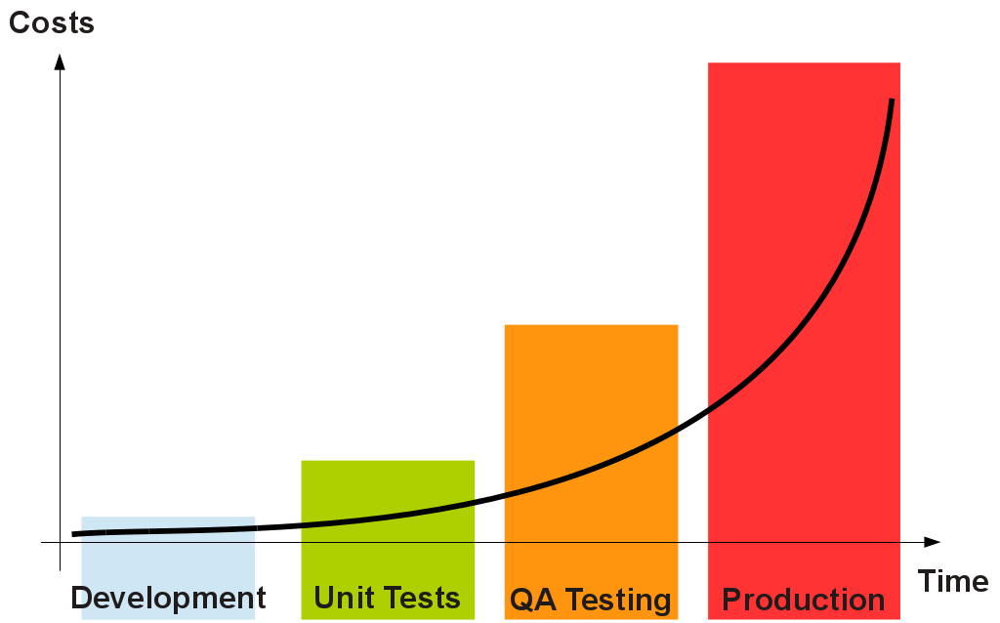
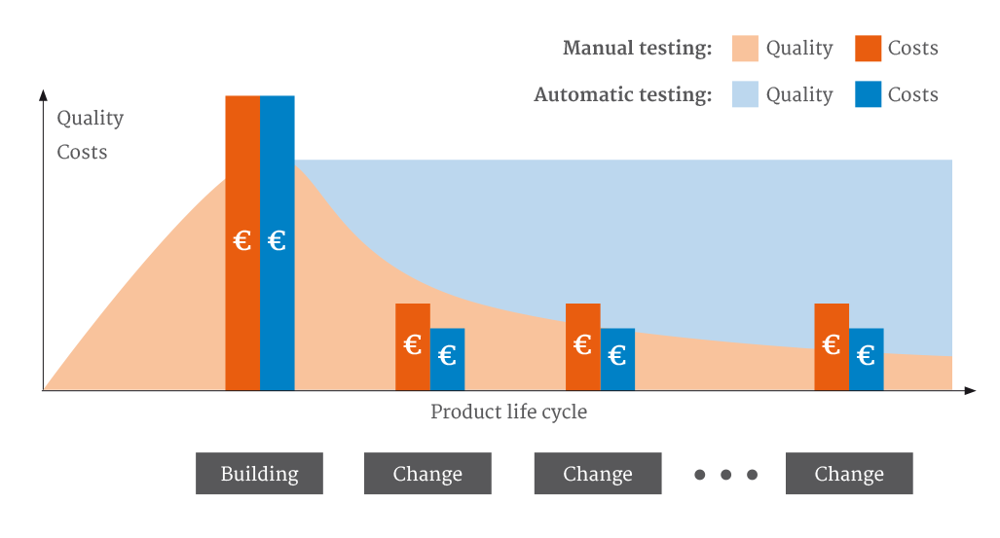
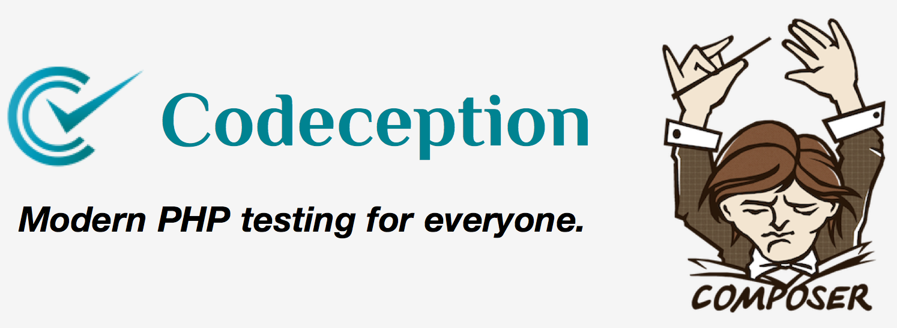
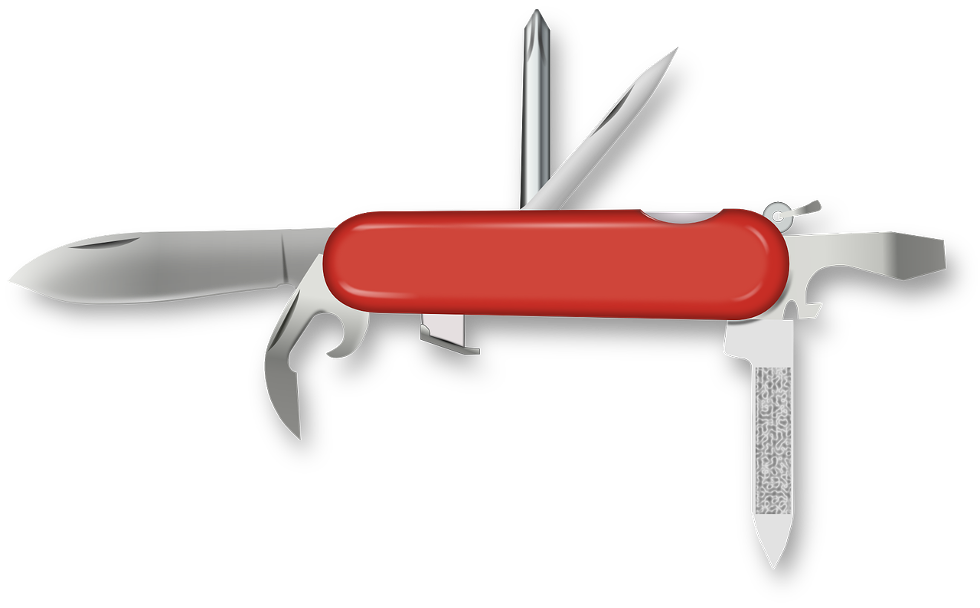
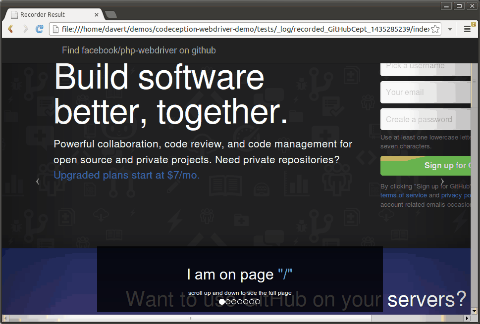
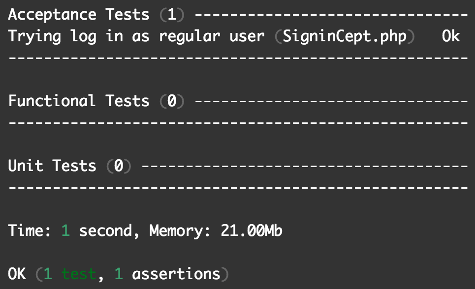
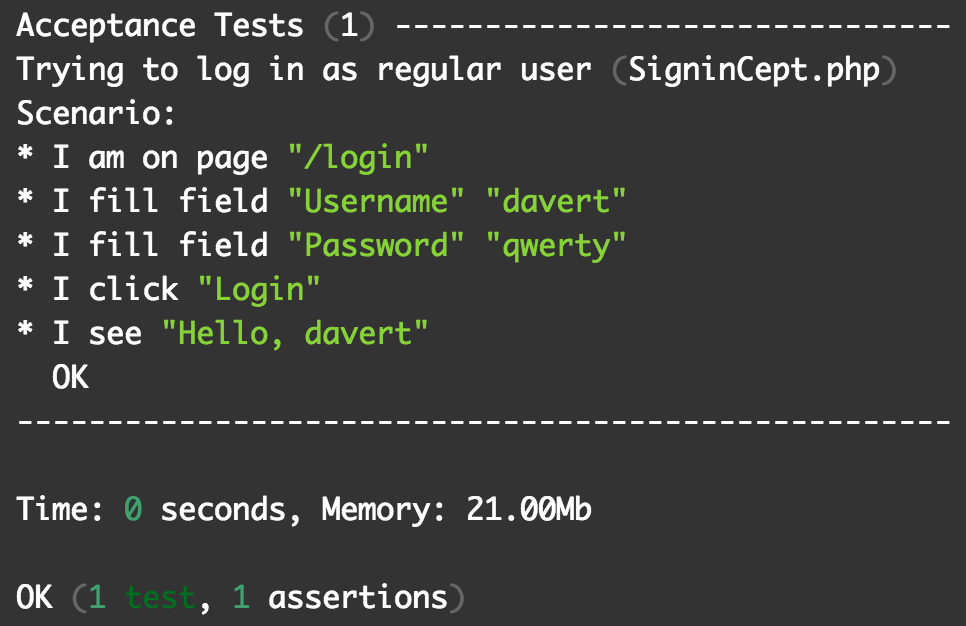
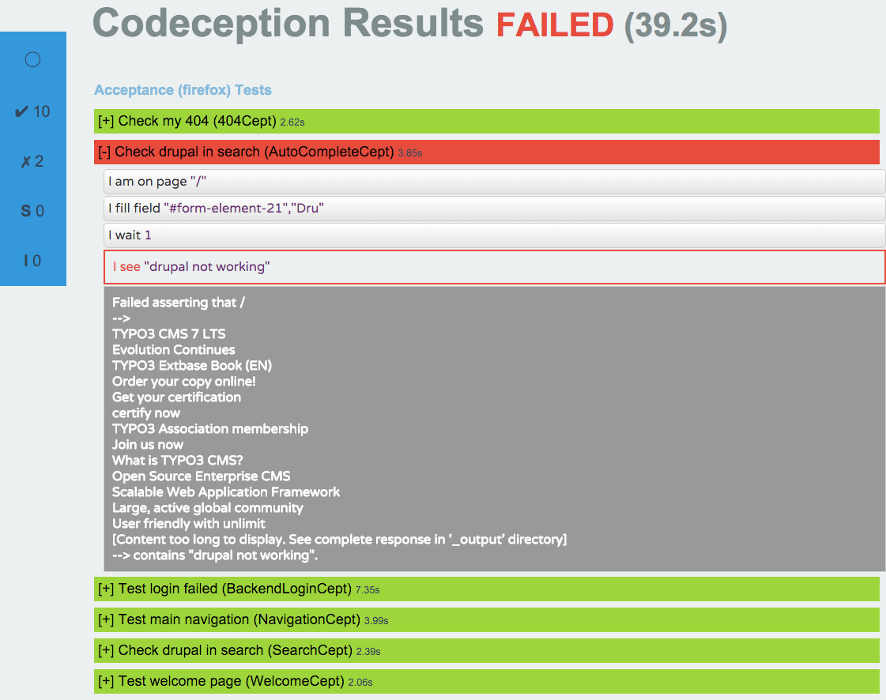
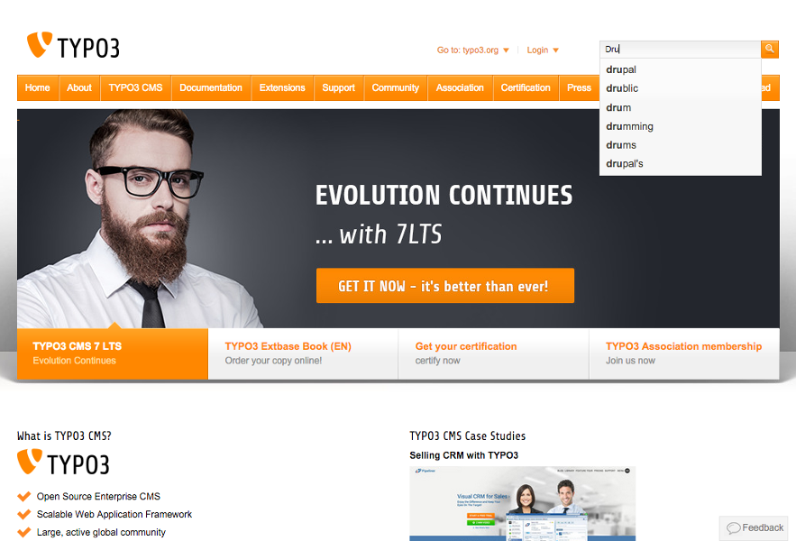

Codeception
Entwicklungshilfe
entwicklungshilfe.nrw / @help_for_devs /
FB/entwicklungshilfe.nrw
Black
White
EH
Codeception
- Why codeception
- Installation
- Tests
- Reports
- Extended
Why codeception

Benefits of automated testing
70% faster than manuel testing
Wider test coverage of application features
Saves time and costs
Improves accuracy
Increases efficiency
Better speed in executing tests
Repeatable
Quality / Costs automated testing

Codeception Installation

Installation Codeception
brew install composer
brew install codeception
brew install selenium-server-standalone
brew install chromedriver
brew install phantomjs
Starting from scratch
Starting from scratch
composer init
composer require --dev codeception/codeception
composer install
php ./vendor/bin/codecept bootstrap
php ./vendor/bin/codecept generate:cept acceptance Welcome
php ./vendor/bin/codecept g:env phantom
php ./vendor/bin/codecept g:env firefox
php ./vendor/bin/codecept g:env chrome
codeception.yml root folder
actor: Tester
paths:
tests: tests
log: tests/_output
data: tests/_data
support: tests/_support
envs: tests/_envs
settings:
bootstrap: _bootstrap.php
colors: true
memory_limit: 1024M
extensions:
enabled:
- Codeception\Extension\RunFailed
modules:
config:
Db:
dsn: 'mysql:host=127.0.0.1;dbname=hilfe_live'
user: 'root'
password: '1234'
dump: tests/_data/dump.sql
populate: true
cleanup: true
RunFailed: Saves failed tests into tests/log/_output/failed in order to rerun failed tests.
php codecept run -g failed
acceptance.suite.yml test folder
class_name: AcceptanceTester
modules:
enabled:
- WebDriver
- \Helper\Acceptance
config:
WebDriver:
window_size: 1024x768
url: 'http://typo3.org'
browser: 'phantomjs'
extensions:
enabled:
- Codeception\Extension\Recorder
config:
Codeception\Extension\Recorder:
delete_successful: false
env:
chrome:
modules:
config:
WebDriver:
browser: 'chrome'
firefox:
modules:
config:
WebDriver:
browser: 'firefox'
Tests

Startpage test cept
$I = new AcceptanceTester($scenario);
$I->wantTo('Test welcome page');
$I->amOnPage('/');
$I->see('What is TYPO3 CMS?');
Navigation test
$I = new AcceptanceTester($scenario);
$I->wantTo('Test main navigation');
$I->amOnPage('/');
$I->waitForElement('h1');
$I->moveMouseOver('.nav > li:nth-of-type(3)');
$I->wait(1);
$I->see('Overview');
$I->click('Overview');
$I->waitForElement('h4');
$I->see('The Enterprise');
Wait for elements.
On JS sometimes is easier to wait a second than to check changing of elements.
TYPO3 login
$I->wantTo('check if we can login to typo3 demo backend');
$I->amOnPage('/typo3/index.php');
$I->see('Login');
$I->wantTo('want to login');
$I->fillField('#t3-username', 'admin');
$I->fillField('#t3-password', 'password');
$I->click('Login');
$I->waitForElement('.nav');
$I->seeLink('Extension Manager');
Use the deeplink sometimes on local env there are no .htaccess working.
Here you test the login and not the url handling.
Slider test cest
class ModuleMenuSliderCest {
public function _before(Actor $I){ $I->loginAsAdmin(); }
public function _after(Actor $I){ $I->logout(); }
public function tryToTest(\AcceptanceTester $I) {
$ids = ['#web', '#file', '#tools', '#system'];
$sees = ['Page', 'Filelist', 'Extensions', 'Access'];
$typo3Menu = '#typo3-menu';
$I->wantTo('check the slider in the module menu');
foreach ($ids as $id) {
$I->waitForElement($id);
// we close all
$classString = $I->executeInSelenium(function (\Facebook\WebDriver\Remote\RemoteWebDriver $webdriver) use ($id) {
return $webdriver->findElement(\WebDriverBy::cssSelector($id))->getAttribute('class');
});
if (strpos($classString, 'expanded') !== false) {
$I->click($id . ' > div');
$I->wait(2);
}
}
foreach ($sees as $see) {
$I->cantSee($see);
}
// we open all
foreach ($ids as $id) {
$I->click($id . ' > div');
$I->wait(2);
}
foreach ($sees as $see) {
$I->see($see);
}
}
}
Better to use cest from beginning. ModuleMenuSliderCest GitHub
Injection
class SignUpCest {
/**
* @var Helper\SignUp
*/
protected $signUp;
/**
* @var Helper\NavBarHelper
*/
protected $navBar;
protected function _inject(\Helper\SignUp $signUp, \Helper\NavBar $navBar) {
$this->signUp = $signUp;
$this->navBar = $navBar;
}
public function signUp(\AcceptanceTester $I) {
$I->wantTo('sign up');
$this->navBar->click('Sign up');
$this->signUp->register([
'first_name' => 'Joe',
'last_name' => 'Jones',
'email' => 'joe@jones.com',
'password' => '1234',
'password_confirmation' => '1234'
]);
}
}
http://codeception.com/docs/07-AdvancedUsage
Advanced testing
CSS values and html attributes
// Enter first is active
$ah = $I->executeInSelenium(function(\Facebook\WebDriver\Remote\RemoteWebDriver $webdriver)
{
return $webdriver->findElement(WebDriverBy::cssSelector(
'.accordion-region:nth-of-type(1)'))->getAttribute('aria-expanded');
});
$this->assertEquals('false', $ah, 'First element is expended on first page load');
$bc = $I->executeInSelenium(function(\Facebook\WebDriver\Remote\RemoteWebDriver $webdriver)
{
return $webdriver->findElement(WebDriverBy::cssSelector(
'.accordion-title:nth-of-type(1)'))->getCSSValue('background-color');
});
$expectedColor = '240, 244, 245, 1';
$this->assertEquals('rgba(' . $expectedColor . '')', $bc, 'Expacted color: ' . $expectedColor . ' not equals: ' . $bc);
http://www.interroll.com/press/media-gallery/
You have phpunit and also all the php-power you want.
Resize tests
$I->wantTo('Check the burger and images when resize');
$I->amOnPage('/');
$I->waitForElement('h1');
// Navigation
$I->canSeeElement('#nav .inr .iq-nav');
$I->cantSeeElement('.iq-responsive-nav');
// Images
$I->canSeeElement('#teaser');
$I->canSeeElement('.iq-image');
$I->resizeWindow(800, 800);
$I->canSeeElement('.iq-responsive-nav');
$I->cantSeeElement('#nav .inr .iq-nav');
$I->canSeeElement('#teaser');
$I->cantSeeElement('.iq-image');
Codeception wiki example
$I = new AcceptanceTester($scenario);
$I->wantTo('create wiki page');
$I->amOnPage('/');
$I->click('Pages');
$I->click('New');
$I->see('New Page');
$I->fillField('title', 'Hobbit');
$I->fillField('body', 'By Peter Jackson');
$I->click('Save');
$I->see('page created'); // notice generated
$I->see('Hobbit','h1'); // head of page of is our title
$I->seeInCurrentUrl('pages/hobbit');
$I->seeInDatabase('pages', array('title' => 'Hobbit'));
Run commands
Run commands
Run selenium
selenium-server -p 4444
Add test
php ./vendor/bin/codecept generate:cept acceptance Welcome
or
php ./vendor/bin/codecept generate:cest acceptance Welcome
All tests acceptance
php ./vendor/bin/codecept run acceptance
Single test
php ./vendor/bin/codecept run acceptance AllUserCept.php
Params
--env firefox --env chrome --steps --xml --html -vvv
Codeception features

Recorder

Codeception screenshot
$scenario->current('name'); // returns current test name
$scenario->current('modules'); // returns current modules
$scenario->current('env'); // returns environment
$I->makeScreenshot($scenario->current('env').'_screenshot_imprint.png');
// saved to: tests/_output/debug/firefox_screenshot_imprint.png
See elements
$I->seeInSource('Green eggs & ham
');
$I->seeInTitle('Blog - Post #1');
$I->seeLink('Logout'); // matches Logout
$I->seeLink('Logout','/logout'); // matches Logout
$I->seeNumberOfElements('tr', 10);
$I->seeNumberOfElements('tr', [0,10]); //between 0 and 10 elements
$I->seeOptionIsSelected('#form input[name=payment]', 'Visa');
Dont see elements
$I->dontSee('Login'); // I can suppose user is already logged in
$I->dontSee('Sign Up','h1'); // I can suppose it's not a signup page
$I->dontSee('Sign Up','//body/h1'); // with XPath
$I->dontSeeCurrentUrlEquals('/'); // current url is not root
$I->dontSeeCurrentUrlMatches('~$/users/(\d+)~'); // to match root url
$I->dontSeeElement('.error');
$I->dontSeeElement('//form/input[1]');
$I->dontSeeElement('input', ['name' => 'login']);
$I->dontSeeElement('input', ['value' => '123456']);
Shorter syntax
$I->wantTo('log in as regular user');
$I->amOnPage('/login');
$I->fillField('Username','davert');
$I->fillField('Password','qwerty');
$I->click('Login');
$I->see('Hello, davert');
$I->fillField('form#login input[name=login]','davert');
$I->fillField('form#login input[name=password]','qwerty');
$I->click('form#login input[type=submit]');
$I->submitForm('form#login', array('login' => 'davert', 'password' => 'qwerty'));
Codeception upload files
$I->attachFile('input[ * `type="file"]',` 'prices.xls');
Codeception checkboxes
$I->dontSeeCheckboxIsChecked('#agree');
// I suppose user agreed to terms
$I->seeCheckboxIsChecked('#agree');
// I suppose user agreed to terms, If there is only one checkbox in form.
$I->seeCheckboxIsChecked('#signup_form input[type=checkbox]');
$I->seeCheckboxIsChecked('//form/input[ * `type=checkbox` and * `name=agree]');`
Codeception drag and drop
$I->dragAndDrop('#drag', '#drop');
Codeception execute js
$myVar = $I->executeJS('return $("#myField").val()');
Codeception grap
$I->grabAttributeFrom('#tooltip', 'title');
$user_id = $I->grabFromCurrentUrl('~$/user/(\d+)/~');
$uri = $I->grabFromCurrentUrl();
$heading = $I->grabTextFrom('h1');
$name = $I->grabValueFrom('Name');
$name = $I->grabValueFrom('input[name=username]');
First
Second
// would return ['First', 'Second']
$aLinkText = $I->grabMultiple('a');
// would return ['#first', '#second']
$aLinks = $I->grabMultiple('a', 'href');
Codeception resize
$I->resizeWindow(800, 600);
Codeception cookie
$I->setCookie('auth', '123345');
$I->grabCookie('auth');
$I->seeCookie('auth');
$I->resetCookie("test");
Codeception generated forms
$I->seeInFormFields('.form-class', [
'input1' => 'value',
'input2' => 'other value',
'multiselect' => [
'value1',
'value2',
],
'checkbox[]' => [
'a checked value',
'another checked value',
],
]);
Codeception Iframes and window
# switch to iframe
$I->switchToIFrame("another_frame");
# switch to parent page
$I->switchToIFrame();
$I->click("Open window");
# switch to another window
$I->switchToWindow("another_window");
# switch to parent window
$I->switchToWindow();
Codeception wait
$I->waitForElement('#agree_button', 30); // secs
use \Facebook\WebDriver\WebDriverElement
$I->waitForElementChange('#menu', function(WebDriverElement $el) {
return $el->isDisplayed();
}, 100);
$I->waitForElementNotVisible('#agree_button', 30); // secs
$I->waitForElementVisible('#agree_button', 30); // secs
$I->waitForJS("return $.active == 0;", 60);
$I->waitForText('foo', 30, '.title'); // secs .title optional
Codeception reporting
Codeception reporting command line
php ./vendor/bin/codecept run

Codeception reporting command line
php codecept.phar run acceptance --steps

Codeception reports
php codecept.phar run --steps --xml --html

Report .html .xml
Fail png

Fail html
drupal
Questions?
Sources
Images
http://blog.pdark.de/2012/07/21/software-development-costs-bugfixing/ https://styde.net/instalacion-de-codeception-con-composer-en-laravel/https://pixabay.com
https://www.braune-digital.com/blog/schnelleinstieg-tests-mit-codeception-selenium-und-chrome/